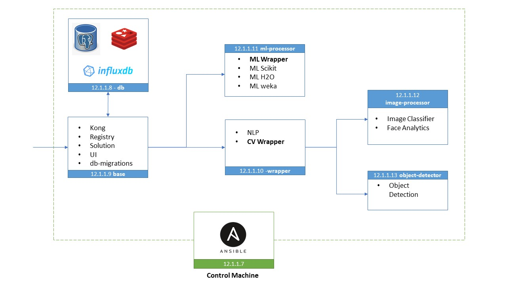

OpenDLTK on multiple machines¶
Table of Contents
Getting Started¶
For simple deployment of OpenDLTK on multiple instances we will use Ansible.
What is Ansible?
Ansible is a simple automation tool that automates software application deployment, cloud provisioning, and configuration management.
It’s a server orchestration tool that helps you to manage and control a large number of server nodes from single places called ‘Control Machines’
So in this section we will use ansible to deploy openDLTK services on multiple machines as shown in below diagram.
Todo
Replace above image
Add content for configuring Databases
Pre-requisites¶
5-8 ubuntu OS machines
Python3 installed on all the machines
root/admin privileges
Installation¶
1. Ansible Installation
$ sudo apt update
$ sudo apt install software-properties-common
$ sudo add-apt-repository ppa:ansible/ansible-2.9
$ sudo apt install ansible
For more detailed installation guide, please refer this link
2. Clone openDLTK github repository
git clone https://github.com/dltk-ai/openDLTK
3. What this repo contains
Todo
add directory tree
Ansible playbooks & roles, docker-compose files for openDLTK services & configurations files.
4. Details about Ansible Files
- Ansible Playbook
These are a set of instructions that you send to run on a single or group of server hosts.
The Ansible Playbook contains some basic configuration, including hosts and user information of the provision servers, a task list that will be implemented to deploy openDLTK services.
Ansible playbooks and roles are present in this repository, which can be used directly.
- Hosts
It’s an inventory file that contains pieces of information about managed servers by ansible. It allows you to create a group of servers that make you more easier to manage and scale the inventory file itself.
- Ansible role
It is a set of tasks to configure a host to serve a certain purpose like configuring a service. Roles are defined using YAML files with a predefined directory structure. A role directory structure contains directories: defaults, vars, tasks, files, templates, meta, handlers.
2. Initialize DLTK setup
cd openDLTK
pip install -r requirements.txt
sudo python3 setup.py -m init
3. Updating Configuration
Please update config.env file saved at
/usr/dltk-ai/config.envAnsible Host Configurations
To verify whether ansible host & roles are setup correctly, we will use following commands
ansible -m ping all
3.a Configuring Storage
STORAGE_TYPE="local"STORAGE_TYPE="aws" # Values only for reference, replace with your credentials S3_ACCESS_KEY="AKIAVKNVW3O4G2YSG" S3_SECRET_KEY="vrJvyZFGSpOFTtZcsDTZTHwJ88Jw" S3_BUCKET="dltk-ai" S3_REGION="ap-south-1" S3_ENDPOINT="https://s3.ap-south-1.amazonaws.com"STORAGE_TYPE="gcp" # Values only for reference, replace with your details GCP_SERVICE_ACCOUNT_FILE=dltk-ai.json GCP_PRIVATE_BUCKET="dltk-ai-private" GCP_PUBLIC_BUCKET="dltk-ai-public"STORAGE_TYPE="do" # Values only for reference, replace with your credentials DO_ENDPOINT="sgp1.digitaloceanspaces.com" DO_ACCESS_KEY="SPZ4OSDVXC35R26" DO_SECRET_KEY="9b7SQmnFNx0vzAHWc5czKW75By01CH4" DO_BUCKET="dltk-ai" DO_REGION="sgp1"Warning
In case you decide to switch your initial storage from one source to another, the data migrations has to be handled by you.
3.b Configure supported AI Engines Credentials
AZURE_LANGUAGE_SUBSCRIPTION_KEY="USER_DEFINED" AZURE_BASE_URL="USER_DEFINED"IBM_LANGUAGE_URL="USER_DEFINED" IBM_SUBSCRIPTION_KEY="USER_DEFINED"
3.c Authentication
In config.env file, update
AUTH_ENABLED="true"Todo
If later you want to disable authentication, please refer this section
In config.env file, update
AUTH_ENABLED="false"Todo
If later you want to enable authentication, please refer this section
4. Update config
sudo python3 setup.py -m update_config
5. Install Services
Docker
sudo ansible-playbook ansible/playbooks/dltk-ai-docker.yml --extra-vars "folderpath=home/dltk"Database
Please update your existing postgres details in config.env, if not already done in configuration step.
# please go to openDLTK directory sudo ansible-playbook ansible/playbooks/dltk-ai-postgres.yml --extra-vars "folderpath=home/dltk"To setup InfluxDB and Redis
sudo ansible-playbook ansible/playbooks/dltk-ai-db.yml --extra-vars "folderpath=home/dltk"Base Services
Base Service will setup Kong, Registry Service (Eureka), Solution Service.
sudo ansible-playbook ansible/playbooks/dltk-ai-base.yml --extra-vars "folderpath=home/dltk"Warning
Database and Base are necessary to run below services, so proceed to other service deployment after deploying above two services.
Machine Learning
ML wrapper installation Steps
sudo ansible-playbook ansible/playbooks/dltk-ai-ml-wrapper.yml --extra-vars "folderpath=home/dltk"sudo ansible-playbook ansible/playbooks/dltk-ai-ml-scikit.yml --extra-vars "folderpath=home/dltk"sudo ansible-playbook ansible/playbooks/dltk-ai-ml-h2o.yml --extra-vars "folderpath=home/dltk"sudo ansible-playbook ansible/playbooks/dltk-ai-ml-weka.yml –extra-vars “folderpath=home/dltk”
Computer Vision
For running Computer vision services we will first deploy a wrapper which route the Images, client request to right processor
To install Computer Vision Wrapper, run below command
sudo ansible-playbook ansible/playbooks/dltk-ai-cv-wrapper.yml --extra-vars "folderpath=home/dltk"Image Classification takes Image as an input & return predicted labels as output in JSON format
To run Image Classification service, run below command
sudo ansible-playbook ansible/playbooks/dltk-ai-cv-image-classification.yml --extra-vars "folderpath=home/dltk"See also
For more details on Image Classification features, please refer this section
Object Detection detects Objects in an Image
To deploy Object Detection service, run below command in ansible control machine
sudo ansible-playbook ansible/playbooks/dltk-ai-cv-object-detection.yml --extra-vars "folderpath=home/dltk"See also
For more details on Object Detection features, please refer this section
This service provide state-of-the-art open source AI models & support to various AI engines to provide face analytics on Images
To deploy Face Analytics services, run below command in ansible control machine
sudo ansible-playbook ansible/playbooks/dltk-ai-cv-face-analytics.yml --extra-vars "folderpath=home/dltk"See also
For more details on Face Analytics features, please refer this section
Natural Language Processing
This service provide various NLP features like Name Entity Recognition, Part of Speech and Sentiment Analysis using various open source AI models & supported AI Engines
sudo ansible-playbook ansible/playbooks/dltk-ai-nlp.yml --extra-vars "folderpath=home/dltk"See also
For more detail on NLP features, please refer this section
Usage¶
Note
Below code block can be run after DLTK python client SDK is installed. The installation of which is covered in next section here installation .
import dltk_ai
client = dltk_ai.DltkAiClient('YOUR_API_KEY', base_url='http://localhost:8000')
text = "The product is very easy to use and has got a really good life expectancy."
sentiment_analysis_response = client.sentiment_analysis(text)
print(sentiment_analysis_response.text)
import dltk_ai
client = dltk_ai.DltkAiClient('86122578-4b01-418d-80cc-049e283d1e2b', base_url='http://localhost:8000')
text = "The product is very easy to use and has got a really good life expectancy."
sentiment_analysis_response = client.sentiment_analysis(text)
print(sentiment_analysis_response.text)